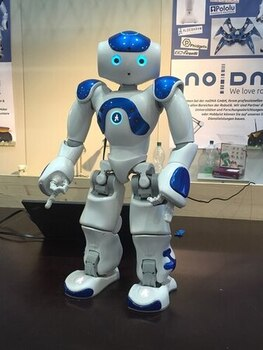
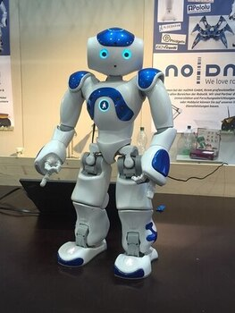

Información
¿Qué es un robot?
La RAE define a los autómatas como una máquina o ingenio electrónico programable que es capaz de manipular objetos
y realizar diversas operaciones.
Profundizando mas en su significado, un robot es una entidad virtual o mecánica artificial. En la práctica, esto es por lo general un sistema electromecánico que, por su apariencia o sus movimientos, ofrece la sensación de tener un propósito propio.
La independencia creada en sus movimientos hace que sus acciones sean la razón de un estudio razonable y profundo en el área de la ciencia y tecnología. La palabra robot puede referirse tanto a mecanismos físicos como a sistemas virtuales de software, aunque suele aludirse a los segundos con el término de bots. 
Profundizando mas en su significado, un robot es una entidad virtual o mecánica artificial. En la práctica, esto es por lo general un sistema electromecánico que, por su apariencia o sus movimientos, ofrece la sensación de tener un propósito propio.
La independencia creada en sus movimientos hace que sus acciones sean la razón de un estudio razonable y profundo en el área de la ciencia y tecnología. La palabra robot puede referirse tanto a mecanismos físicos como a sistemas virtuales de software, aunque suele aludirse a los segundos con el término de bots. 